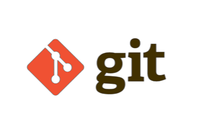
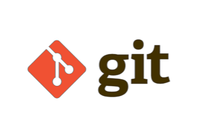

Meu nome é Diego Alípio Abenício, nasci numa cidadizinha do interior de Minas Gerais chamada Formiga. Atualmente, Formiga conta com aproximadamente 68.000 habitantes, bem pequena perto das grandes cidades.
Sou filho único, cresci na cidade onde nasci. Desde pequeno, mostrei um imenso interesse por tecnologia, tive contato com joguinhos, aplicativos, CPUs, sistemas, etc. Esse contato me despertou um grande interesse em aprender sobre tecnologia, entender como funcionava e afins, o que me levou a ser quem sou hoje.
Sou uma pessoa extrovertida e bem fácil de lidar, nos meus núcleos sociais gosto de ser aquele que está a frente de todos, ajudando e liderando.


 
